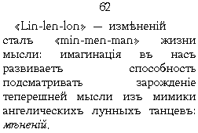
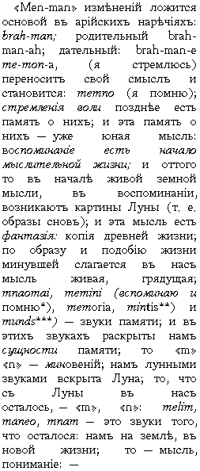
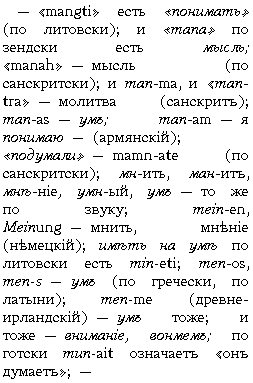
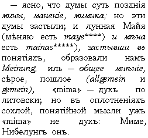
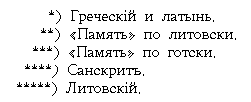

Glossolalia (Section 62)
GLOSSOLALIA

"Lin-len-lon" -- of these amendations became the "min-men-man" of the life of thought: imagination develops in us the capability to observe the birthing of contemporary thought from the mimicry of the angelic lunar dances: of the minglings.

"Men-man" of amendations lies at the foundation of the Aryan dialects: brah-man; the genitive brah-man-ah; dative: brah-man-e me-mon-a ( I strive) to transfer this meaning and it becomes memno (I remember); strivings of free-will are later a memory about them; and this memory about them is -- already a youthful thought: remembering is the beginning of the life of thought; and thence in the beginning of living earthly thought, in remembering, there arise pictures of the Moon (i.e. the images of dreams); and this thought is phantasy: a copy of the ancient life; in the image and likeness of life meandering by there composes in us a living thought, the coming one: mnaomai, memini (I recall and remember* ), memoria, mintis** and munds*** are -- the sounds of memory; and in these sounds are revealed to us the essences of memory; that "m" "n" are -- of minglings; the Moon is revealed to us in lunar sounds; what remained in us from the Moon is -- "m", "n": melim, maneo, mnam -- these are sounds of that which remained: to us on the earth, in the new life; that is -- thought, comprehension; --

-- manyti is -- "to comprehend" (in Lithuanian); and "mana" in Zendic is thought; "manah" is -- thought (in Sanskrit); and man-ma; and "man-tra" is -- prayer (Sanskrit); man-as -- mind; man-am -- I comprehend (Armenian); they thought-- mamn-ate (in Sanskrit); to mean [mnit'], manipulate [man-it'], mental [mnenie], brightminded [umnyj-], mind [um] have the same sounds as: mein-en, Meinung -- to mean, mindset (German); to have in mind in Lithuanian is min-eti; men-os, men-s -- mind (in Greek, in Latin); men-me (Old-Irish) -- mind also; and also -- have in mind [vnimanie], be mindful of [vonmen]; in Gothic mun-ait signifies "he thinks.";--

-- it is clear, that thoughts are later miens, manipulation, mimicry; but these thoughts had grown congealed; and the lunar Maia (I amend, it is "maye" **** and amending is mainas, ***** which had congealed into concepts, gave form for us to Meinung, or the general mindset, grey, banal, (allgemein and gemein); "mima" is -- spirit in Lithuanian; but in the condensation of dried out, comprehended thought "mima" is no longer the spirit: Mime, it is the Nibelung.

*Greek and Latin
** "memory" in Lithuanian.
*** "memory" in Gothic.
**** Sanskrit.
***** Lithuanian.